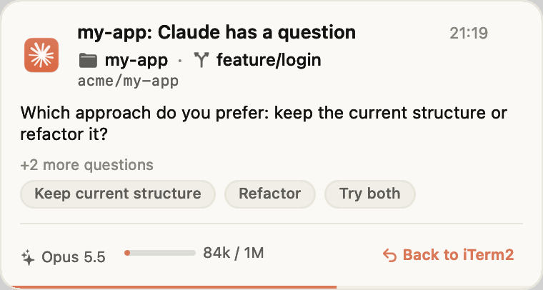
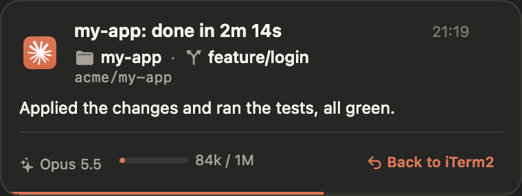
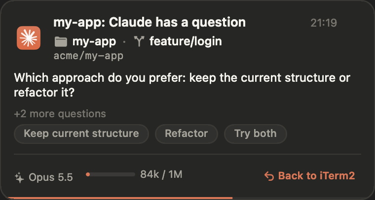
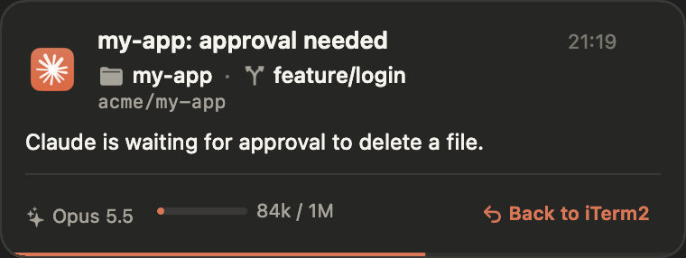
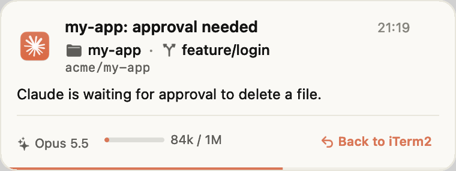
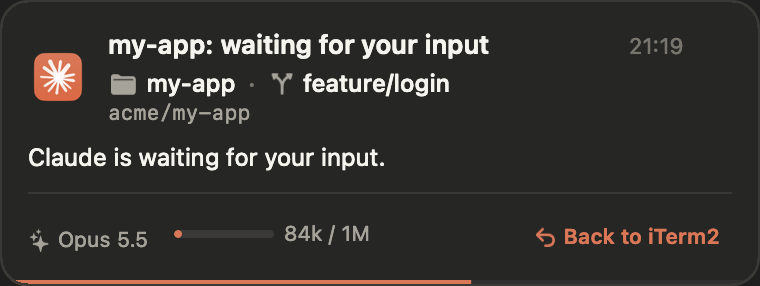
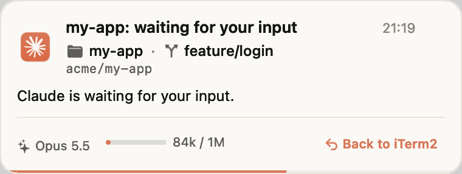
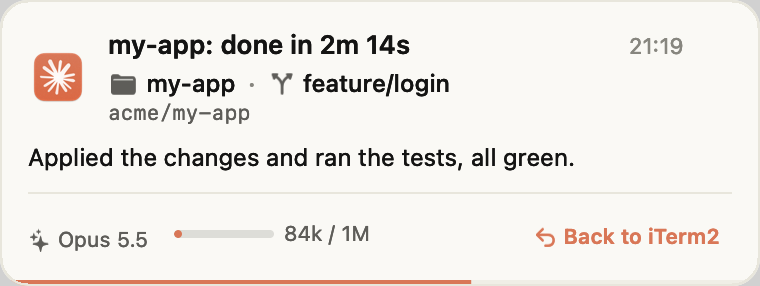

cla-notify shows a desktop notification when Claude asks a question, waits for your approval or input, or finishes a turn. One click takes you back to the exact terminal tab the session runs in.
Run both commands inside Claude Code. Free and open source under the MIT license. An unofficial community plugin, not affiliated with Anthropic.


These are the macOS cards, drawn by the bundled HUD from the same data every presenter receives. On Linux and Windows the same text appears through the system's own notifications.






Long turns, approval prompts and follow-up questions no longer sit unseen in a background tab.
Separate cards for a question, an approval prompt, an idle session and a finished turn, each with its own label, text and sound.
Click the card to bring the terminal forward, down to the tab or pane the session runs in: iTerm2, Terminal, Ghostty, WezTerm, kitty, Warp, VS Code, Cursor, tmux and Windows Terminal.
A bundled HUD on macOS, the desktop notification service over D-Bus on Linux and native toasts on Windows. One plugin, prebuilt binaries, nothing to compile.
Titles, bodies, labels and button text are templates with placeholders like {project}, {branch} and {duration}.
Pick a sound per event or stay silent, set how long each card stays up, choose the screen corner, stack size and a light, dark or automatic theme.
Everything runs on your machine. No account, no network calls, no telemetry. Your prompts and answers never leave the computer.
A small Go core sits between Claude Code's hooks and the notification system of your OS. It does the thinking once, so every presenter only has to draw.
The plugin registers a handful of hooks that fire on the moments that matter.
PreToolUse for questionsNotification for approval and idleStop when a turn endsSessionStart, UserPromptSubmit for timingReads the event, the transcript and git, then renders a single Card.
The Card goes to the presenter for your OS, which shows it and handles the click.
Ask /cla-notify:config for what you want, like "move cards to the bottom left" or "turn off the done sound", or set keys yourself with the CLI. Every key is optional; missing keys keep their defaults.
# rewrite the text of a card cla-notify config set events.done.title "{project} done, {duration}" cla-notify config set events.ask.title "{project} asks" cla-notify config set labels.focusButton "Open {app}" # sounds and timing cla-notify config set events.done.sound none # 0 keeps a card up until dismissed cla-notify config set events.ask.durationSeconds 0 # no done card for turns under 30 seconds cla-notify config set events.done.minTurnSeconds 30 cla-notify config set sound.volume 0.4 # where and how cards appear cla-notify config set display.corner bottom-left cla-notify config set display.theme dark cla-notify config set display.maxCards 5 # inspect and undo cla-notify config show cla-notify config validate cla-notify config reset
{project}{path}{branch}{repo}{model}{context}{contextPercent}{duration}{question}{options}{message}{summary}{app}{event}{count}{context} renders like 84k / 1M and {duration} like 2m 14s. {count} is for labels.moreQuestions only. Unknown placeholders are left as written, and empty values collapse cleanly.
Sounds: default for the platform sound, none for silence, or a file path or system sound name.
Config file: ~/.config/cla-notify/config.json on macOS and Linux (honors $XDG_CONFIG_HOME), %APPDATA%\cla-notify\config.json on Windows, or $CLA_NOTIFY_CONFIG.
events.<kind>.enabledtrueTurn one of ask, permission, idle, done on or off.events.<kind>.durationSeconds20 / 12 / 8How long a card stays up; 0 keeps it until dismissed.display.cornertop-rightAny of the four screen corners.display.screenautoauto, main or the screen under the mouse.display.themeautoauto, light or dark.display.suppressWhenFocusedtrueStay quiet when the terminal is already in front.display.showModel, showContext, showGittrueToggle the details shown on each card.The full reference lives in the README.
Cards are drawn by a small bundled HUD, cla-notify-hud. No other software needed. Cards stack, respect the Dock and follow the theme you pick.
Needs a running notification daemon. Most desktops ship one; on a minimal setup install dunst or similar. For click to focus, tmux, xdotool or wmctrl are used when present.
Needs Git Bash, which Claude Code on Windows already requires. Toasts are shown through a Start Menu shortcut cla-notify creates on first use, and a click brings the terminal back.
Start with /cla-notify:doctor. It reports the platform, whether the presenter for your OS passes its own check, the config and state paths, and the terminal cla-notify detected.
Run /cla-notify:doctor, then /cla-notify:test all to show sample cards. If the presenter check fails, it names what is missing: the HUD binary on macOS, a notification daemon on Linux, or toast support on Windows.
Also note that display.suppressWhenFocused is on by default, so nothing shows while the terminal is already in front.
That happens when the terminal could not be identified. /cla-notify:doctor shows what was detected. On Linux, install tmux, xdotool or wmctrl to enable window focus.
Set a minimum: cla-notify config set events.done.minTurnSeconds 30. Or turn the event off with events.done.enabled false.
No. cla-notify runs locally, makes no network calls and has no telemetry. It reads the session transcript and git metadata on your machine only to fill in the card.
No. cla-notify is an unofficial community plugin, not affiliated with or endorsed by Anthropic. Claude and Claude Code are trademarks of their owner.
cla-notify config reset deletes the config file so defaults apply again. To remove the plugin, run /plugin uninstall cla-notify@cla-notify.